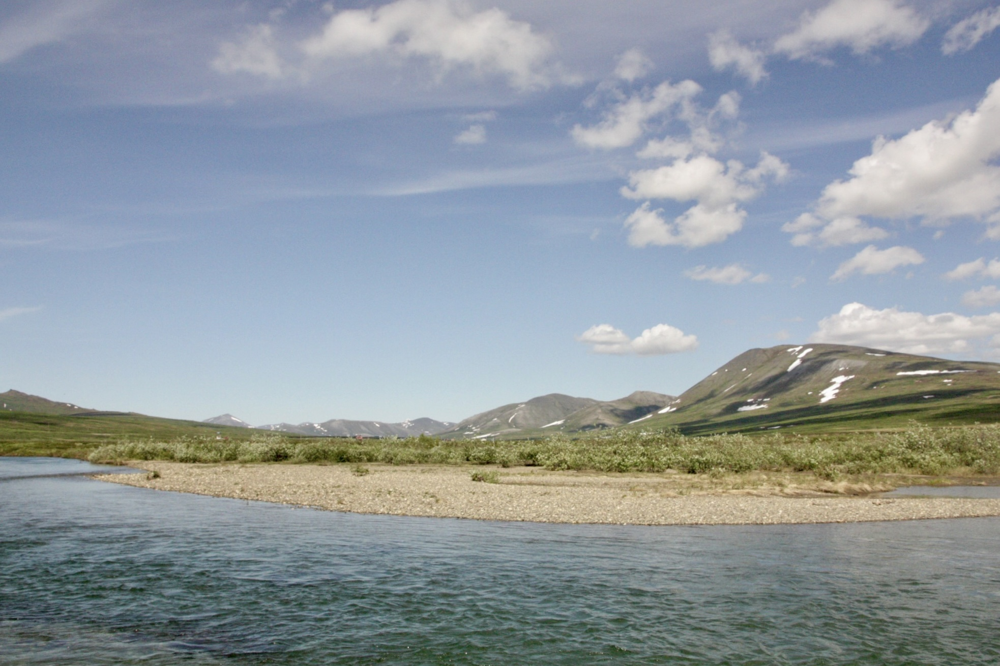

Selected Works
Publications
-
2022
Distinguishing Sex of Northern Spotted Owls with Passive Acoustic Monitoring
Journal of Raptor Research, 56(3), 287–299

Curriculum Vitae
Experience & Education
Education
2026 – Present
PhD in Ecology, Evolution, and Behavior
Boise State University · Supervisor: Dr.Stephanie Galla
2023 – 2026
MSc in Raptor Biology
Boise State University · Thesis: Using Comparative Genomics to Characterize Immune Genes between the Holarctic Gyrfalcon and Globally Distributed Peregrine Falcon
2015 – 2019
BSc in Zoology
Oregon State University
Fieldwork
Summers 2021–2024
Arctic Field Research
[Location(s)] — shorebird & seabird ecology, banding, sampling
2020
Field Assistant
[Project / PI Name] — [Location]
Awards & Funding
2023
[Fellowship / Award Name]
[Funding body or institution]
2022
[Travel Grant / Conference Award]
[Granting body]
Teaching & Service
2022–2024
Graduate Teaching Assistant
[Course Name(s)] · [Your University]
2023
Peer Reviewer
Journal of Avian Biology · Molecular Ecology
Get in Touch
Contact
I'm always happy to hear from fellow researchers, potential collaborators, or anyone interested in Arctic birds and genomics. Feel free to reach out.